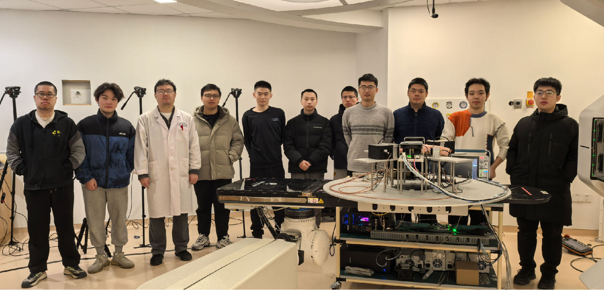
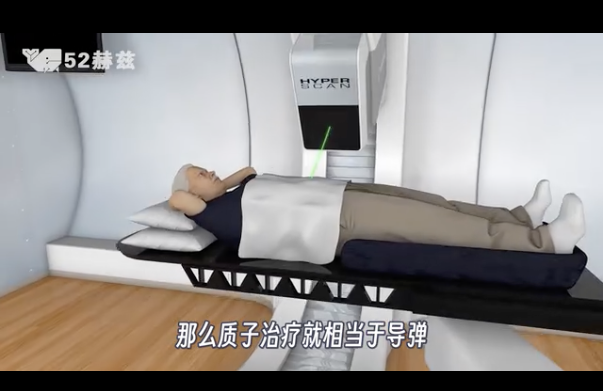

质子治疗监测
依托重点专项推动科学突破与成果转化
重点专项是实验室高质量发展的核心驱动力。实验室立足基础科学与医学影像领域国家重大战略需求，依托专项明确核心研究方向、升级科研平台硬件条件，攻克关键核心技术。依托各类重点专项，实验室汇聚高水平科研人才，深化产学研协同创新，推动原创科研成果产出与产业化转化，夯实学科竞争优势，打造特色化学术品牌，为实验室长远发展与高标准建设提供坚实支撑。
研究基础
基于值域采样，结合信号先验信息，以若干阈值比较器即可简洁地完成海量通道高速信号的精确数字化。
质子治疗有多强大？放射治疗领域的顶尖技术

本视频由 52 赫兹实验室发布于哔哩哔哩平台，介绍质子治疗及其在现代放射治疗体系中的应用。
前往哔哩哔哩观看原视频。
前往哔哩哔哩观看原视频。
最新新闻

6月28日
数字PET实验室
近日，大陆科学家首次在台湾长庚纪念医院将全数字平板PET用于质子束在线监测，并取得良好效果，这项研究表明有了全数字PET的精准追踪，质子放疗精准度将大大提高...
重点科研项目


实验室纪事
我们的使命是打造一片适宜顶尖科学蓬勃发展的科研环境：保障科研人员发展、孕育创意与创新、完善硬件平台与基础设施，支撑 PET 实验室肩负服务国家的使命。
谢庆国
首席研究员，教授，博士生导师
数字化探测技术与仪器开发
质子治疗监测

进一步探索
重点论文
A novel iterative iso-transmission line empirical material decomposition algorithm for multi-energy photon-counting CT
Jan 01
Biomedical Signal Processing and Control,
99, 2025, 106853. doi:10.1016/j.bspc.2024.106853.
Performance Evaluation of New PET/CT DigitMI 930
Jan 09
IEEE Transactions on Radiation and Plasma
Medical Sciences, vol. 9, no. 5, pp. 578-585, May 2025, doi:
10.1109/TRPMS.2025.3526659.
Investigation of a Dual-Panel In-Beam PET Based on Digital Detectors for Proton Therapy Monitoring With Different Monitoring Strategies: A Simulation Study
Jan 30
IEEE Transactions on Radiation and Plasma
Medical Sciences, vol. 10, no. 4, pp. 582-592, April 2026, doi:
10.1109/TRPMS.2025.3584122.